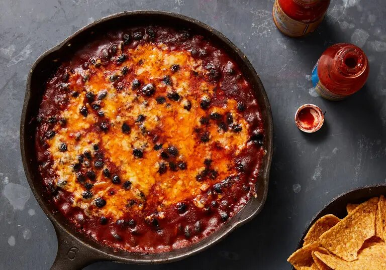

Why I chose this recipe
I chose this recipe because I have made it many times and it is easy to make and doesnt requre any uncomon ingredients.
Ingredients

Yield:
-
3 tablespoons extra-virgin olive oil
-
5 garlic cloves, peeled and sliced
-
¼ cup tomato paste
-
1½ teaspoons smoked paprika
-
¼ teaspoon red-pepper flakes
-
1 teaspoon ground cumin
-
2 (14-ounce) cans black beans, drained and rinsed
-
½ cup boiling water
- Kosher salt and black pepper
-
1½ cups grated Cheddar or Manchego cheese (from about a 6-ounce block)
Preparation
- Heat the oven to 475 degrees. In a 10-inch ovenproof skillet, heat the olive oil over medium-high. Fry the garlic until lightly golden, about 1 minute. Stir in the tomato paste, paprika, red-pepper flakes and cumin (be careful of splattering), and fry for 30 seconds, reducing the heat as needed to prevent the garlic from burning.
- Add the beans, water and generous pinches of salt and pepper, and stir to combine. Sprinkle the cheese evenly over the top then bake until the cheese has melted, 5 to 10 minutes. If the top is not as browned as you’d like, run the skillet under the broiler for 1 or 2 minutes. Serve immediately.
The End.